↓
Descarga directa
Pega un enlace, analiza metadatos y decide si bajar video, audio, portada o subtítulos. Si el formato ya sirve, evita recodificar.
ClipDock · escritorio + Premiere Pro
ClipDock es una mesa de trabajo multimedia para traer videos desde fuentes compatibles, recortar, convertir, mejorar imágenes con IA local y enviar recursos directo a Adobe Premiere Pro con ClipDock Remote.
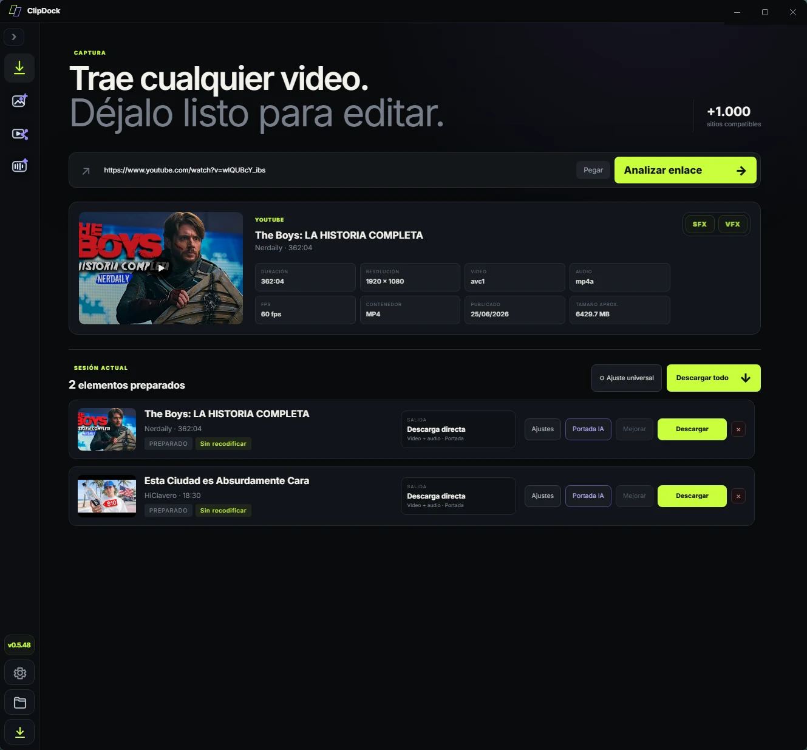
La interfaz separa cada etapa del flujo: descarga, laboratorio de IA, taller de conversión, biblioteca SFX/VFX y ajustes de componentes.
Pega un enlace, analiza metadatos y decide si bajar video, audio, portada o subtítulos. Si el formato ya sirve, evita recodificar.
Mejora imágenes, escala con Real-ESRGAN, elimina fondos y conserva una receta universal para procesar una sesión completa.
Convierte, recorta y prepara entregables con ajustes claros de contenedor, códec, calidad, velocidad e intervalos.
Guarda recursos rápidos, previsualiza clips y mándalos a Premiere para no perder tiempo buscando archivos sueltos.
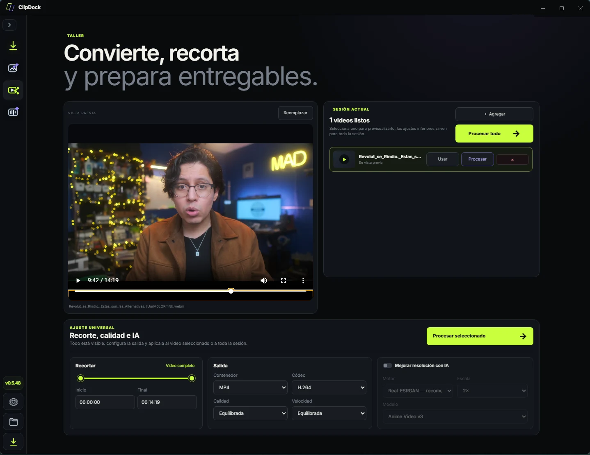
Vista previa, cola de sesión y ajuste universal en la misma pantalla. Ideal para cortar un clip, cambiar contenedor o preparar un archivo final sin abrir varias herramientas.
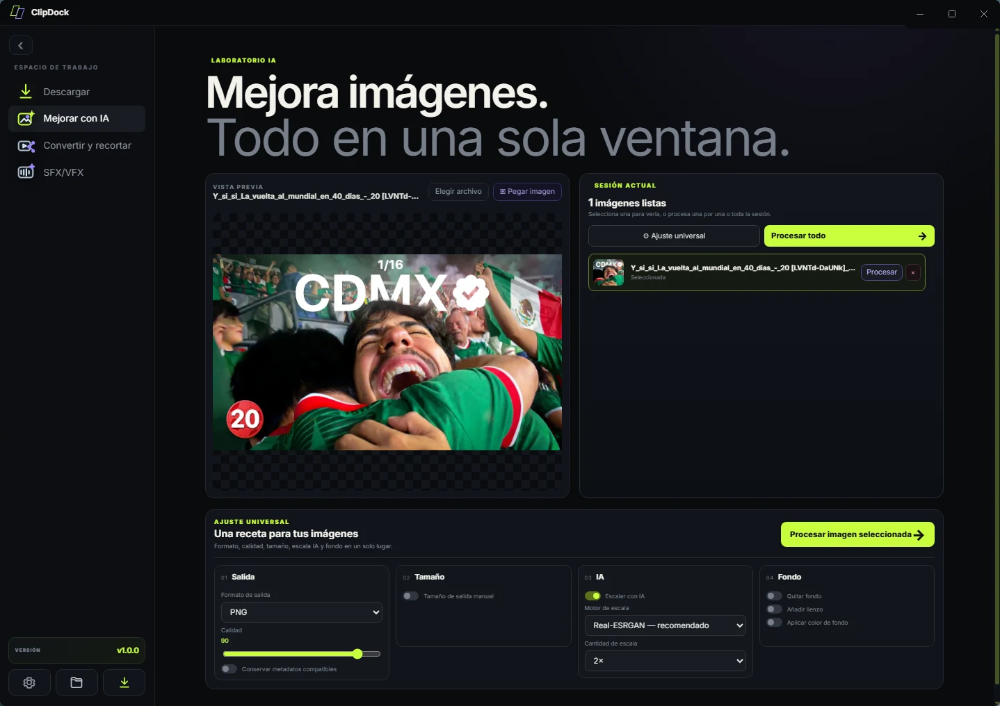
Formato, calidad, tamaño manual, escala con IA, modelos de fondo y opciones de limpieza reunidas en una ventana simple.
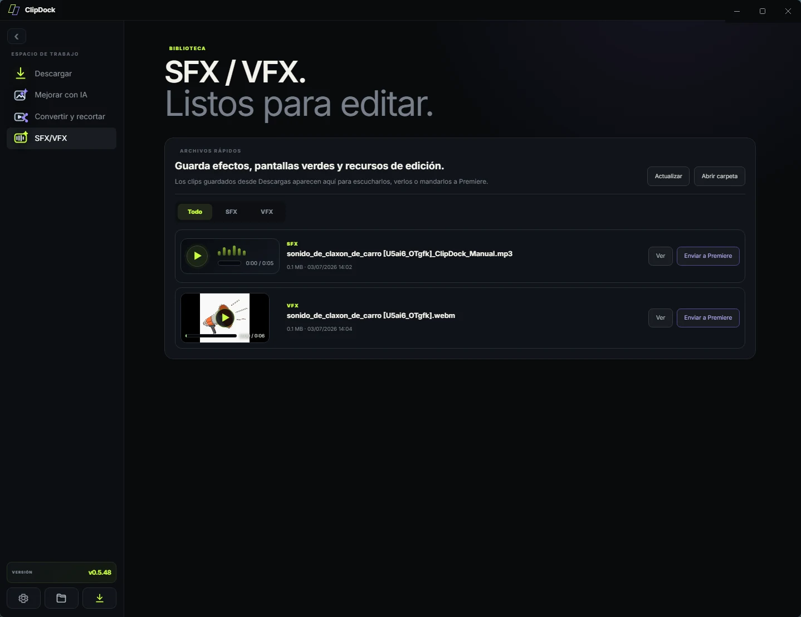
Los clips descargados aparecen como biblioteca rápida para escucharlos, verlos o enviarlos directo al proyecto.
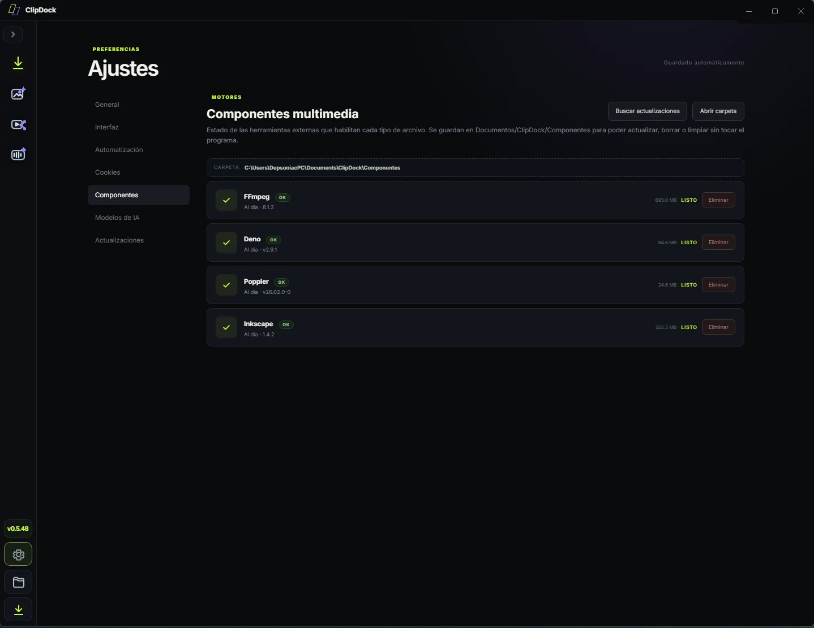
FFmpeg, Deno, Poppler e Inkscape se guardan en Documentos para actualizar, borrar o limpiar sin tocar el programa.
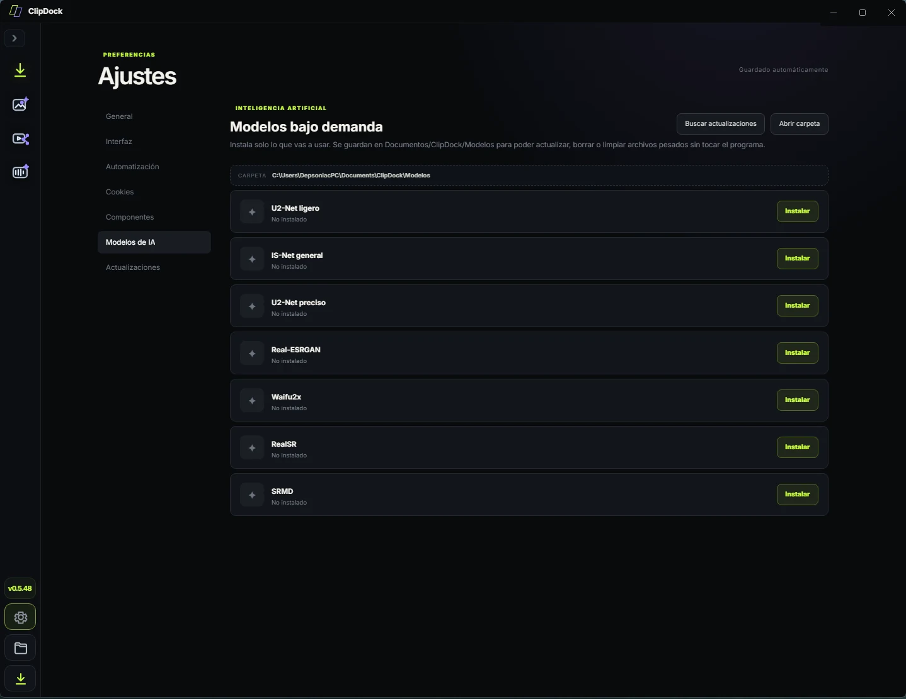
Los modelos U2-Net, IS-Net, Real-ESRGAN, Waifu2x y otros quedan separados para mantener el programa ligero.
ClipDock Remote · Premiere Pro
ClipDock Remote es la extensión para Adobe Premiere Pro. Sirve como puente: toma la selección del proyecto, manda tareas a ClipDock y devuelve resultados importados o listos para insertar en timeline.
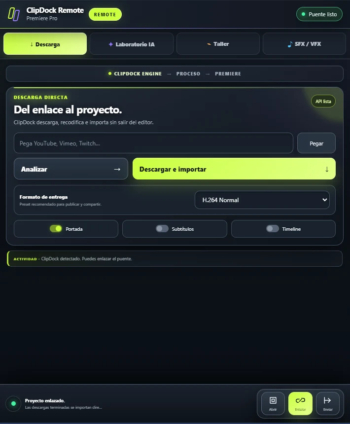
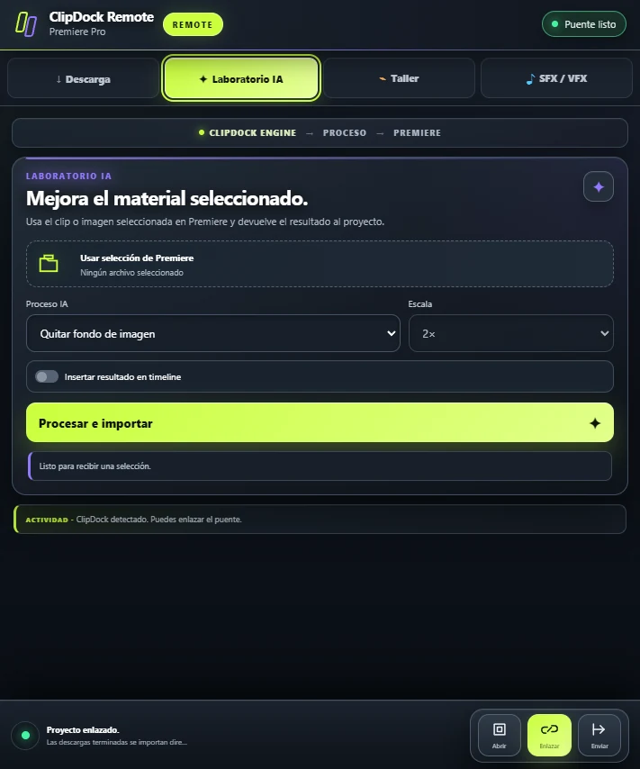
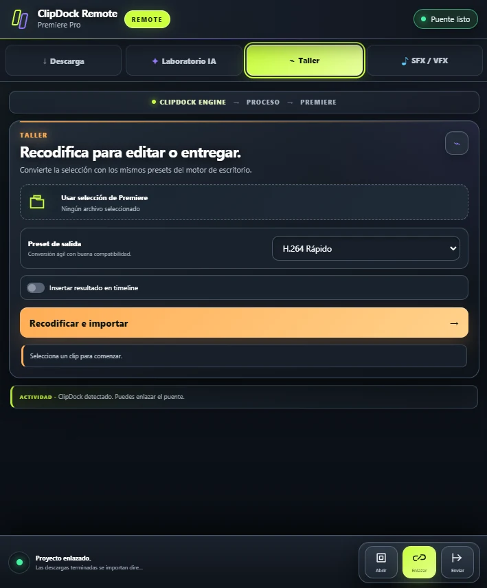
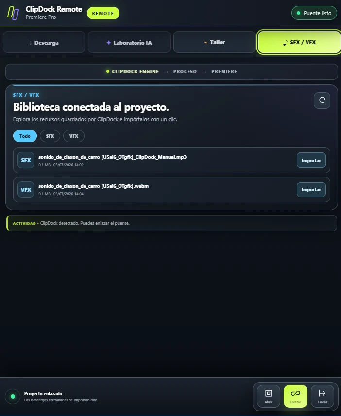
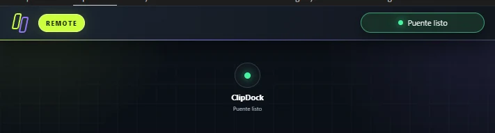
ClipDock separa la interfaz, motores, modelos y recursos para que el repositorio sea fácil de publicar y actualizar.
Repositorio
El proyecto vive en GitHub. Desde ahí puedes revisar el código, descargar builds publicados y seguir los cambios de ClipDock y ClipDock Remote.
Uso responsable
ClipDock debe usarse con contenido propio, con permiso o con licencias que permitan descarga/procesamiento. La app está pensada como herramienta de flujo de trabajo para edición, archivo y preparación de medios.